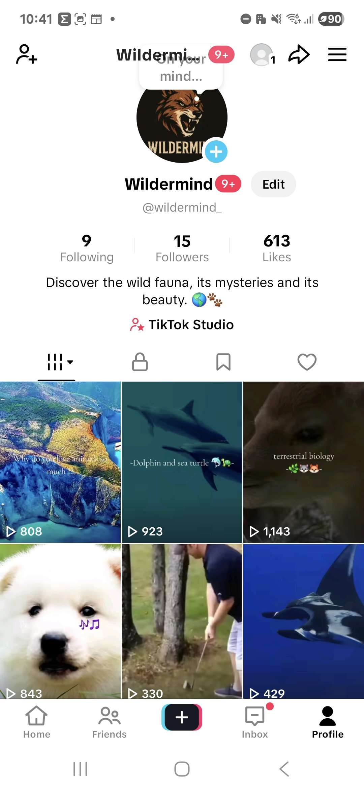
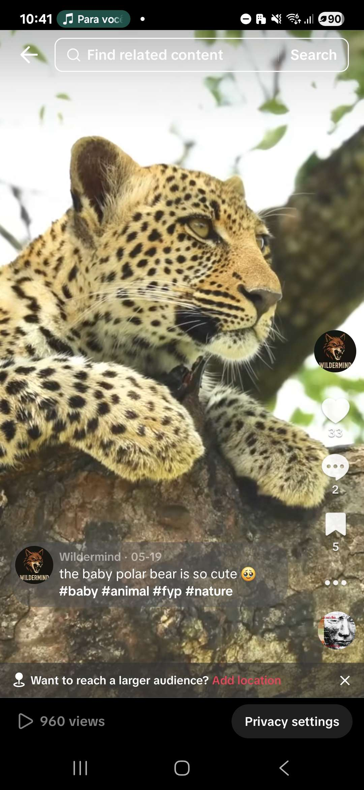
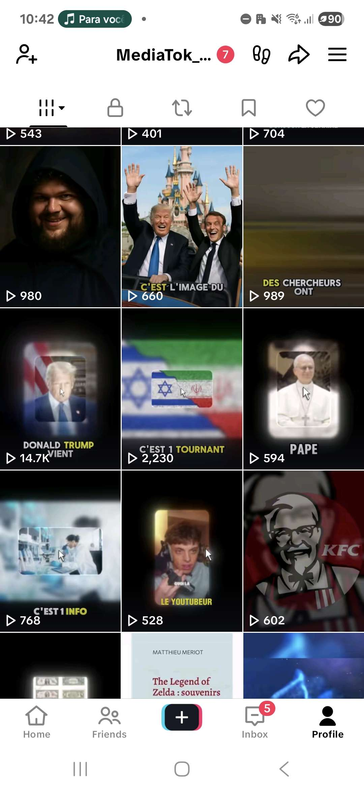

Les Réseaux
Les réseaux, c’est un peu comme un terrain de jeu : tu testes, tu rates, tu ajustes, et parfois tu tombes sur la bonne recette. J’ai lancé plusieurs comptes et projets TikTok, et si tout n’a pas été viral, ça m’a appris à comprendre en profondeur l’algorithme et les mécaniques qui font exploser un contenu.
WilderMind : La faune sauvage
Un compte TikTok dédié aux animaux sauvages, avec des vidéos immersives et éducatives. Le but était d’émerveiller et d’informer en même temps, en s’appuyant sur la curiosité naturelle des spectateurs.
Vidéos sous-marines en 4K
Un format expérimental autour de la vie sous-marine, filmée en qualité 4K et accompagnée de musique immersive. Chaque vidéo intégrait un call-to-action subtil pour maximiser l’engagement (likes, abonnements, partages).
Histoires d’horreur & faits insolites
J’ai aussi exploré le format narratif avec des voix IA pour raconter des histoires d’horreur et des faits insolites. L’objectif : capter l’attention grâce à un storytelling fort et au mystère, tout en optimisant la rétention.
Compétences acquises
- Compréhension de l’algorithme TikTok et de ses leviers.
- Optimisation de la rétention via le montage (cuts rapides, effets sonores, zooms dynamiques).
- Expérimentation avec différents formats (immersif, narratif, éducatif).
- Mise en place de CTA stratégiques pour booster l’engagement.
- Gestion de la régularité et du timing de publication (1-2 vidéos par jour, tests aux heures de pointe).
- Exploration de niches porteuses et adaptation du contenu à chaque audience.